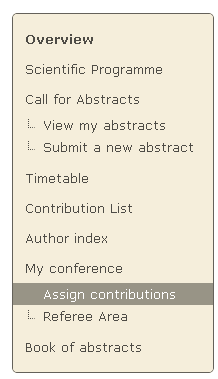
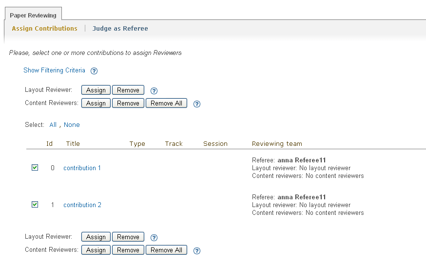
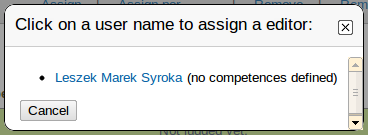
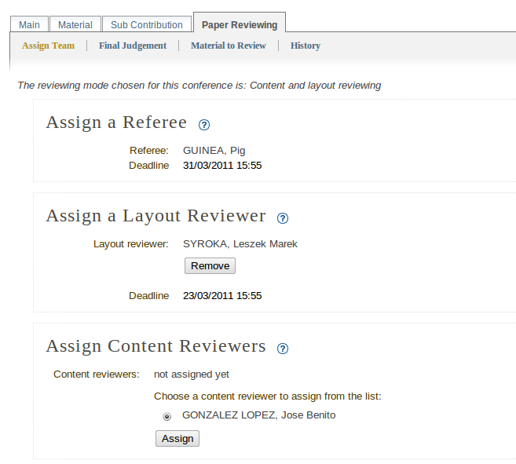
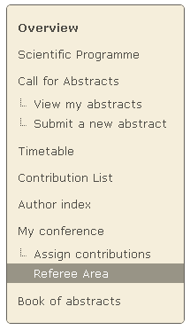
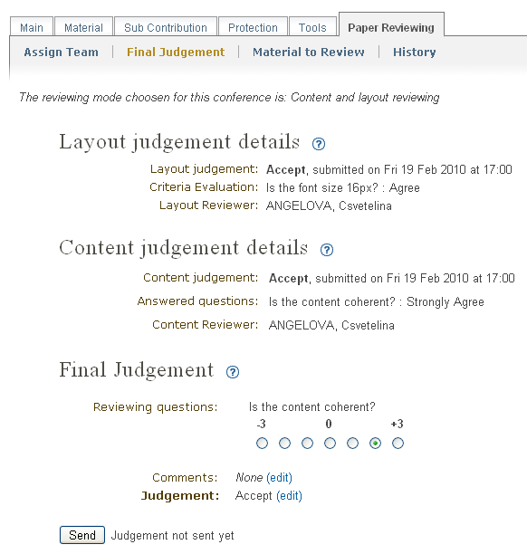
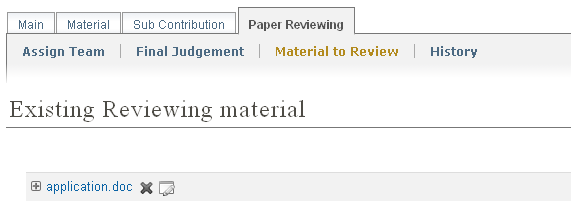
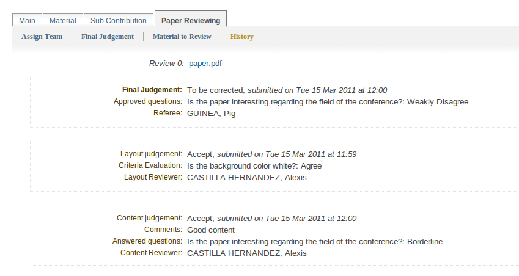

1. Paper reviewing module - referee’s guide¶
1.1. Getting started¶
As a referee, your responsibilities are to assign contributions to the reviewers and to give the final judgement for all of the contributions that have been assigned to you. You may log in to the system and you will find in the left menu two links under My Conference, Assign Contributions and Referee Area.

1.2. Assigning contributions to the reviewers¶
You can assign more than one contribution to the same reviewers by selecting them using the check boxes. Depending on the chosen reviewing mode (Content reviewing or Content and layout reviewing) you need to assign different kinds of reviewers.
After checking the check boxes and clicking the Assign button, a dialogue will be displayed. Use the popup dialogue to select the reviewer you wish to assign to the selected contributions. If there are pre-defined competences for him, they will be shown next to his name.
Also, you can click on the name of a contribution and assign a reviewing team for it.

1.3. Referee area¶
When you access the referee area you will find a list of all the contributions that are assigned to you for judgement. You can follow
if the author of the contribution has submitted the materials for reviewing
the state for every contribution, whether it is judged by the content reviewers or by the layout reviewer, or by both.
Your responsibility as referee will be to give the final judgment for the contribution: to be corrected, rejected, accepted or one of the customized status added by the Managers. Accessing again the reviewing area (by clicking on the contribution’s title) you will be able to see the judgements and the opinions on the layout and the content given by the reviewing team.
In order to submit your final judgement, click on the Send button. The authors of the contribution will receive automatically generated e-mail notification containing your comments and judgement, if the managers of the paper reviewing set this option.
The material which is the subject of reviewing is accessible for the referees from the Material to Review tab.
The system gives you the opportunity to follow the reviewing history for every contribution. The reviewing history is built when there is more than one review per paper. You can access it from the History tab right after sending your final judgement.
